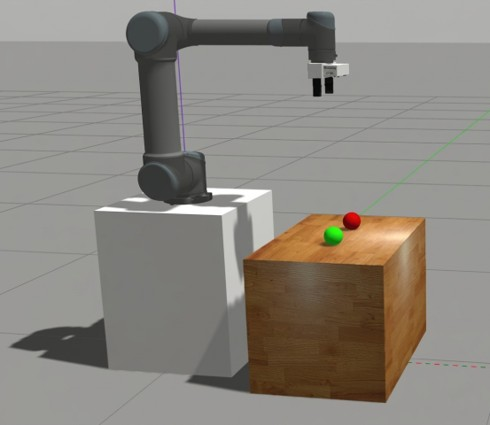
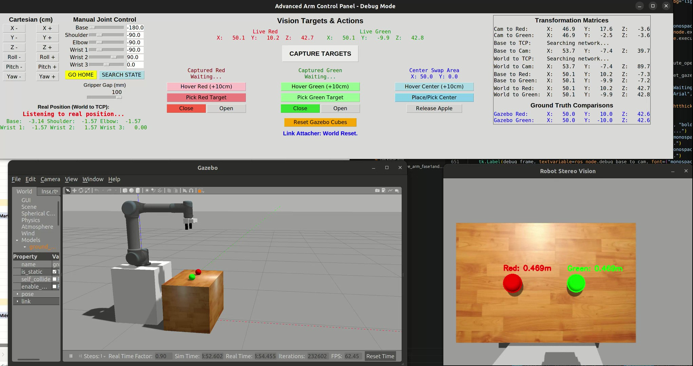

Luis Arturo González Salas
Robotics Engineer (M.Sc.)
Specializing in the design, construction, and programming of physical systems. Graduate of a double degree Master's program in Advanced Robotics across Japan and France. Demonstrated expertise in integrating hardware components, sensor networks, and advanced control algorithms to engineer robust solutions for complex technical challenges.
Actively seeking full-time robotics engineering roles in Europe. Fully authorized to work in France (Valid Residence Permit).
Technical Stack
Languages
About Me
Professional experience, double degree studies, and academic achievements.
Academic Projects
System architecture, robotic manipulation, automation lines, and computer vision.
My Code
Personal software repositories featuring clean algorithms and framework integration.
About Me: Education, Experience & Achievements
Education & Achievements
Academic Background
M.Sc. in Science & Engineering
Keio University (Tokyo, Japan) | 2024 - 2025
Part of the JEMARO Double Degree program. Specialized in micro-robotics, control systems, and haptic feedback.
M.Sc. in Advanced Robotics
Ecole Centrale de Nantes (France) | 2023 - 2024
First year of the JEMARO Double Degree. Comprehensive study of kinematics, dynamics, and medical robotics architecture.
B.Sc. in Mechatronics Engineering
Tecnológico de Monterrey (Mexico) | 2019 - 2023
Minor in Cyber-physical Systems. Integrated mechanics, electronics, and computing for automated solutions.
Honors & Awards
-
Erasmus Mundus Scholarship
Highly competitive grant awarded for master studies in the JEMARO program (2023).
-
Full Coverage Academic Scholarship
Awarded full tuition coverage for excellence prior to bachelor studies (2019).
-
Olympiad of Informatics Medals
Silver medal at the National Mexican Olympiad (2018) and Gold medal at the State level (2016-2018).
-
CSWA SolidWorks Certification
Certified associate in mechanical design (2021).
-
COVID-19 Public Hospital Donation
Engineered and produced 1,800 mask protectors for frontline medical staff (2020).
Professional Experience
Engineering Project Management Intern
Navistar International
2022 - 2023
- Engineered a comprehensive internal platform utilizing Visual Basic to systematically control, review, and summarize engineering projects across the organization.
- Collaborated in daily agile stand-ups and technical design reviews with cross-functional engineering teams based in the USA.
Full-Stack Web Developer
Freelance Contractor
2019 - 2021
- Developed and deployed comprehensive web applications for inventory and expense tracking, integrating secure user authentication and role-based access control.
- Engineered relational database architectures (MySQL) to log financial expenditures, track sales, and manage dynamic product information.
- Built interactive digital catalogs featuring real-time search engines to improve end-user navigation and product discoverability.
- Designed responsive administrative dashboards with data analytics capabilities to streamline organizational oversight.
Academic Projects
Portfolio of physical systems and simulations developed during Master's and Bachelor's degrees. Projects encompass mechanical design, electronics integration, and control software architecture.
Master's Degree

Micro-scale Particle Teleoperation
Design of a two-axis haptic teleoperation system allowing operators to physically feel and control laser-trapped microparticles. Features integrated trap stiffness calibration alongside admittance control and reaction force observers.
Technical Details
Medical Cobotic Assistant
Development of a simulation for the hand guidance of a macro-micro redundant robot. Engineered for medical applications to assist in percutaneous interventions utilizing advanced torque and impedance control laws.
Technical Details
3-RPR Parallel Robot Optimization
Design and mathematical optimization of a 3-RPR planar parallel robot, minimizing physical footprint while enforcing strict operational reach and singularity-free configuration constraints.
Technical Details
Manipulator Modeling & Control
Development of foundational control algorithms in C++ for robotic manipulators. Features implementation of direct/inverse kinematics, Jacobian modeling, and Cartesian trajectory generation.
Technical DetailsBachelor's Degree

Automated Production Line
Automation of a manufacturing plant utilizing mobile robots, collaborative arms, and digital twin technology to architect a self-regulating Industry 4.0 production system.
Technical Details
2-DoF Automated Gripper
Engineering of a 2-DoF linear gripper and rotational system for automated brick laying. Integrates precise AC motor control, structural CAD design, and real-time sensor feedback.
Technical Details
Robotic Welding Cell
Design and simulation of an automated robotic work cell for a laser welding production line. Integration of ABB industrial robots, custom pneumatic fixtures, and safety systems.
Technical Details
Automatic Tire Inflation System
Design and implementation of an RTOS-driven embedded system prototype for dynamic tractor tire pressure regulation, featuring PID control and active leakage compensation.
Technical DetailsMy Code
Independent software engineering projects developed to implement specific algorithms and integrate modern robotics frameworks.

Collaborative Arm: Fruit Sorting
A comprehensive ROS 2 and Gazebo simulation utilizing stereo vision to detect targets and an inverse kinematics solver for autonomous pick-and-place sorting.
Micro-scale Particle Manipulation Using Bilateral Control
Keio University, Tokyo
Technical Specifications
Core Concepts
Bilateral Teleoperation, Admittance Control, Reaction-Force Observer (RFOB), Optical Trap Calibration
Software Integration
C++, Python, OpenCV
Hardware Components
Thorlabs CDL1015 Laser, 100x Oil-Immersion Objective, Thorlabs Zelux CMOS Camera, Custom 2-Axis Linear Motors, Motorized Stage
Project Context
This project focuses on bridging the sensory gap in biological micromanipulation procedures, such as Intracytoplasmic Sperm Injection. Operators normally rely entirely on visual information to guess the forces applied to fragile cells. To solve this, a 2-axis bilateral teleoperation system was designed to pair a custom-built haptic master device with an optical tweezers slave manipulator. The system translates the macroscopic hand movements of the operator into precise microscopic actions, allowing the user to physically feel piconewton-scale interaction forces.
Development Architecture
The hardware utilizes a Thorlabs CDL1015 continuous wave laser at 976 nanometers focused through a 100x oil-immersion objective to create the optical trap. The master interface features two linear motors equipped with high-resolution encoders.
The software architecture relies on a C++ high-frequency control loop to manage an admittance control scheme. To provide force feedback without a dedicated physical sensor, the system incorporates a Reaction-Force Observer that estimates the interaction forces based on real-time tracking. A Disturbance Observer is also utilized to estimate and cancel out external mechanical disturbances on the linear motors, ensuring the operator only feels the true micro-environment forces.
For position tracking, a custom computer vision algorithm was implemented in Python using OpenCV. The software applies a Gaussian blur to reduce noise and uses thresholding to isolate the laser center. It then applies sub-pixel corner detection to accurately find the centroid of the trapped particle. This positional data is sent to the main controller via socket communication to calculate the exact forces.
Accurate force estimation requires calculating the optical trap stiffness. The project evaluated several passive calibration techniques. The Equipartition, Boltzmann, and Mean Squared Displacement methods proved reliable. The Power Spectral Density analysis overestimated the stiffness because the camera's limited sampling rate of 107.9 Hz introduced motion blur and aliasing.
Project Media Gallery
ICSI Application

Optical Tweezer Setup

Medical Cobotic Assistant
École Centrale de Nantes
Technical Specifications
Core Concepts
Impedance Control, Kinematics, Jacobian, Task Distribution, Manipulability Index
Software Environment
MATLAB, Simulink
Hardware Models
KUKA iiwa 7 R800 (7-DoF), RRR Serial Robot (3-DoF)
System Objective
Simulation development for the hand guidance of a macro-micro redundant robotic system. The initiative aims to assist in percutaneous medical interventions, where enhanced medical gestures lead to improved patient care, reduced intervention costs, and optimized ergonomic conditions for surgeons.
The complete architecture was modeled using MATLAB and Simulink, pairing a heavy 7-DoF KUKA robot (acting as the macro system) with a smaller 3-DoF robotic mechanism (the micro system).
Control & Kinematics Strategy
Robot configurations were initially defined utilizing Denavit-Hartenberg parameters to compute forward kinematics and Jacobian matrices. The manipulability index—a critical safety metric indicating proximity to mechanical singularities—was continuously derived from these matrices to ensure secure operations.
A core operational requirement mandated position control with a fixed orientation for the macro arm, while the micro robot operated exclusively via torque control. A computed torque controller featuring an impedance control law was engineered for the surgical tool. This configuration allows the mechanism to function as a virtual spring and damper, yielding safely to applied surgical forces and rendering the heavy macro robot virtually weightless during manual hand guidance.
To unify both machines, a dynamic task distribution algorithm was implemented. By monitoring the micro-robot's physical extension (distance AB) and current manipulability index, the algorithm evaluates and dictates in real-time whether the macro arm should assist movement or if the micro tool possesses sufficient workspace to operate independently.
Automated Production Line
Tecnológico de Monterrey
Technical Specifications
Core Concepts
Autonomous Navigation, Computer Vision, PLC Communication, Custom Hardware, Factory Simulation
Software Environment
ROS, Python, OpenCV, Modbus, RobotStudio, Tecnomatix, TIA Portal
Project Objective
Developed as a capstone project to obtain a minor specialty in Cyberphysical Systems. The objective involved architecting a fully automated production line for custom keychain assembly, integrating multiple industrial machines into a unified ecosystem in collaboration with industry partners.
Integration Strategy
The core logistical unit consisted of a mobile manipulator (MoMa)—an xArm collaborative robot mounted on an autonomous mobile base. This system was synchronized with conveyor networks, a Modula automated vertical storage unit, an ABB dual-arm YuMi robot, and a stationary UR5 robotic arm to manage sequential material handling and assembly tasks.
Precision manipulation was achieved through custom-engineered camera mounts and CAD-modeled work-holding fixtures. Computer vision pipelines utilizing OpenCV detect part position and orientation, transmitting precise coordinates to the robotic grippers to ensure accurate extraction.
2-DoF Automated Gripper
Tecnológico de Monterrey
Technical Specifications
Core Concepts
Mechanical Design, Motor Control, Sensor Integration, State Machine Logic
Project Objective
Engineering and development of a linear gripper equipped with an AC motor and a rotational system, specifically designed to lift and position bricks for automated wall construction. The primary directive was to accelerate building processes while significantly mitigating physical strain on personnel during heavy material handling tasks.
ROS 2 Fruit Sorting Architecture

Frameworks
Middleware
ROS 2, ament_cmake, RobotStatePublisher
Languages
C++, Python 3
Environnement
Gazebo 11
Implementation Details
Development of a complete ROS 2 middleware ecosystem interfacing with Gazebo physics. The project relies on a hybrid stack utilizing C++ for high-performance kinematic solvers and Python for high-level state logic and vision pipelines.
The vision pipeline parses stereo camera data via OpenCV. Depth estimation is calculated via pixel shift disparity, translating raw visual data into 3D world coordinates through the TF2 transformation library. Corresponding end-effector targets are passed to a C++ node housing the Orocos Kinematics and Dynamics Library (KDL), where a Levenberg-Marquardt solver derives the requisite joint angles for the 6-axis mechanism.
Node Architecture
ik_solver_node.cpp
C++ IK solver processing TF targets into joint commands.
vision_detector.py
HSV masking and stereo depth pipeline.